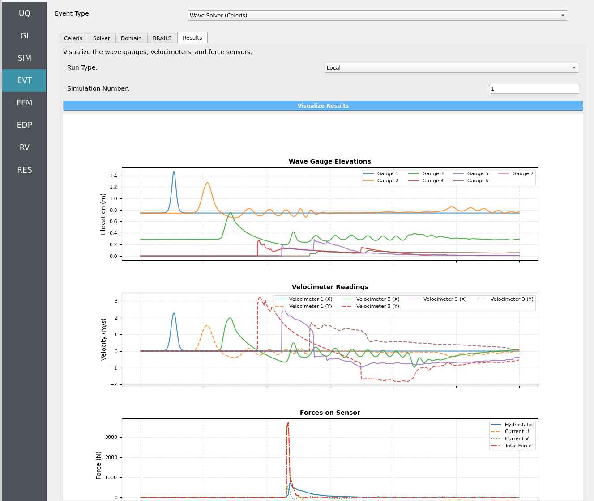

Results
Visualize the wave gauges, velocimeters, and force-sensor time series from Celeris simulations produced by your most recent workflow execution.
{kind=link}

Overview
The Results tab loads simulation outputs and renders a Python-generated plot containing:
Free-surface elevation at wave gauges
Velocities at velocimeter points
Forces along the force sensor line (decomposed into hydrostatic and hydrodynamic components)
Select a Run Type
Use the Run Type selector to choose which execution to visualize.
Run Type |
Requirements |
|---|---|
Local |
No extra steps. Ensure your most recent local workflow was a Celeris run. |
Remote |
You must first retrieve the remote job data from DesignSafe using the
|
Note
Remote visualization depends on the presence of the extracted output files from DesignSafe; without them, plots cannot be generated.
Choose a Simulation Number
Set Simulation Number to the desired sample index to visualize (1 to
the maximum number of samples you configured in the UQ tab).
Tip
If you aren’t sure which sample you want, start with 1, then step through
sequentially to compare variability across samples.
Visualize the Results
Click ``Visualize Results`` to render a multi-series plot:
Wave Gauges — free-surface elevation time histories
Velocimeters — point velocity time histories
Force Sensor — total force split into hydrostatic and hydrodynamic components along the defined sensor line
Note
Plots are generated via an embedded Python script. If your Python path is not properly set in Files > Preferences, the plot will not be created.
Quality & Caveats
Warning
Force-sensor accuracy can degrade if: - The sensor line was not flush with and in front of a structure’s perimeter. - Overtopping occurred (water flowing over the structure). - Start/End points were inverted, flipping the sensor’s normal vector
and causing forces to be reported with the wrong sign or magnitude.
Important
If the force plot looks suspicious (e.g., sign-flipped loads), verify the sensor line ordering and placement in the Celeris setup and re-run the simulation.
Troubleshooting Tips
No data found (Local): Ensure your most recent local workflow was a Celeris run.
No data found (Remote): Confirm you ran
GET from DesignSafeand extractedworkdir.tar.gzto the expected directory (see Jobs).Empty or partial plots: Check that the Simulation Number exists (within
1..Nwhere N is the UQ sample count).Force plot anomalies: Re-check sensor line order (start/end), placement relative to the structure, and whether overtopping occurred.